1先講想法：畫面是一張張疊起來的
你在 Canva 看到的那一整張卡片，電腦其實不是這樣記的。對電腦來說，那是一疊東西——背景一張、城堡一張、南瓜一張、字一張⋯⋯一張一張照順序疊上去。
每一張，就叫做一個圖層。規則只有一條，而且非常好記：
這就是今天整堂課的核心。南瓜不是「不見了」，它一直都在同一個位置，只是排在城堡後面，所以被擋住了。
要讓它出現，不需要移動它、不需要放大它、更不需要重新去找一顆南瓜——只要把它在這一疊裡面往上搬就好。
🃏 想像一副撲克牌
把一副牌攤在桌上疊成一落，你只看得到最上面那一張。底下的牌並沒有消失，它們好好地在那裡，只是被壓住了。
你想看紅心 A，會把上面的牌撕爛嗎？不會——你會把紅心 A 抽出來放到最上面。圖層做的就是這件事。
2玩玩看：把東西搬到城堡前面
進 Canva 之前先在這裡玩一次。右邊那一排就是圖層清單，排法跟等一下真正的 Canva 一模一樣：越上面的越前面。
按 ▲ 把東西往前搬、按 ▼ 往後搬，左邊的畫面會立刻跟著變。城堡被鎖住了搬不動，所以要搬的是其他三個：
南瓜現在完全看不到。下面哪一個做法才對？
南瓜真的消失了嗎？還是只是被壓在下面？
3打開老師的範本
概念懂了，來做真的。打開瀏覽器，在網址列輸入這一行——注意是英文的點，不要打成句號：
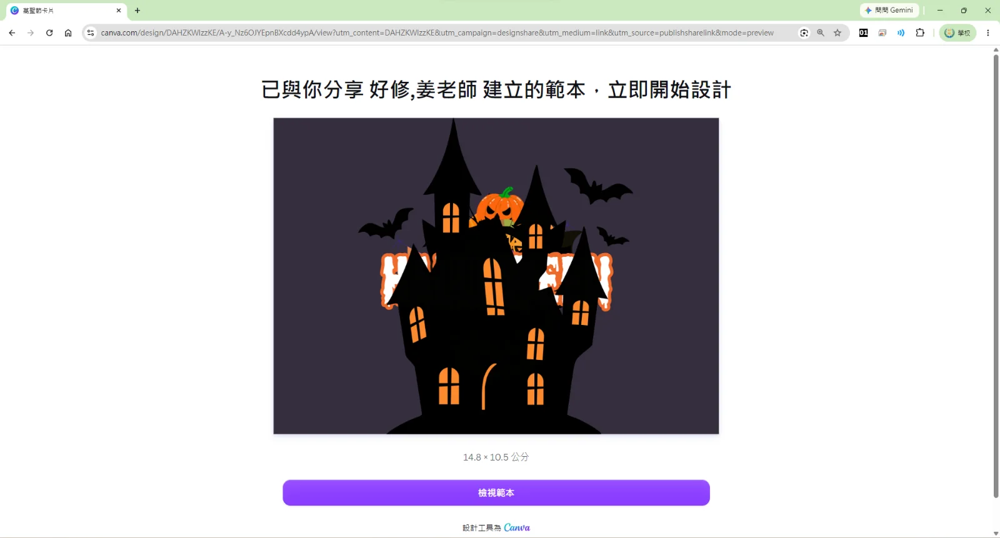
按下去以後，畫面中央會跳出白色的小視窗，標題寫著「你的範本已準備就緒！」。按左半邊那顆紫色的在編輯器開啟，順便確認按鈕下面顯示的是你自己的帳號。
⚠️ 這一段忘記了？
開範本的流程跟前兩課完全一樣，連畫面都一樣。要重看一次：第 1 課「先把老師的範本打開」。
4怪事：一整張卡片只有一座城堡
進到編輯畫面了。中間那一大片就是你的卡片，可是上面只有一座城堡——沒有字、沒有南瓜、沒有幽靈，連一隻蝙蝠都只露出幾隻翅膀：
仔細看，其實已經有線索了：城堡屋頂附近有幾塊白白橘橘、形狀怪怪的東西露在外面。那些就是被擋住的物件沒被遮到的那一小角。
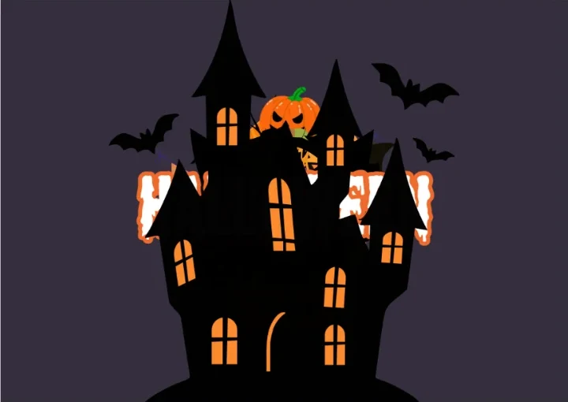
兩張圖裡的城堡，位置、大小完全一樣。你今天唯一要改的，就是其他東西跟它的前後順序。
5點它看看——城堡搬不走
第一個念頭通常是「那我把城堡拖開不就好了」。試試看：在城堡上點一下，它會被紫色的框選起來，可是怎麼拖都拖不動。
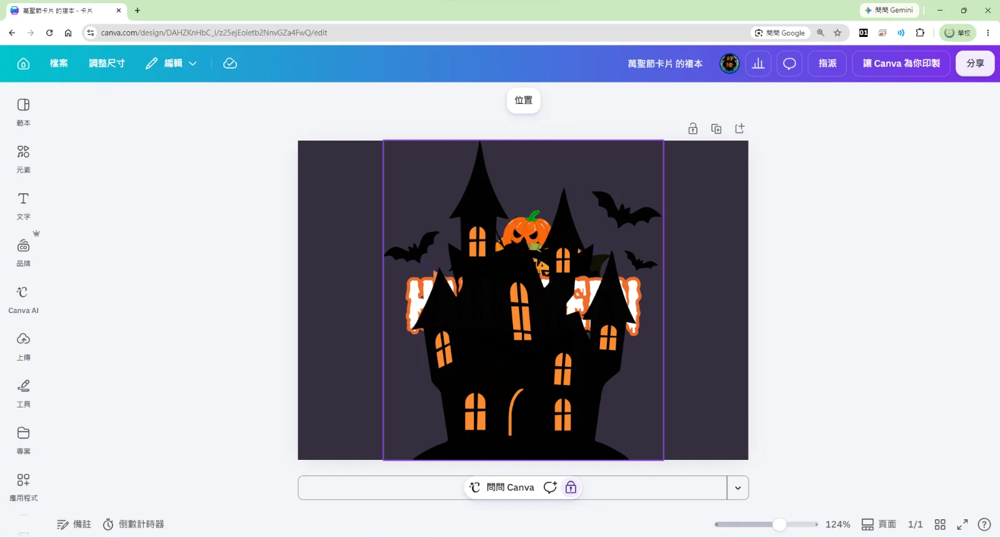
所以今天的玩法已經定下來了：城堡不動，動的是別人。 按下畫布上方那顆位置：
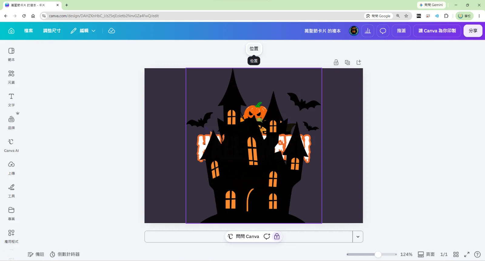
6打開圖層清單，整疊攤開來看
左邊會展開一片面板，上面有兩個頁籤：排列、圖層。預設停在「排列」，點右邊那個「圖層」：
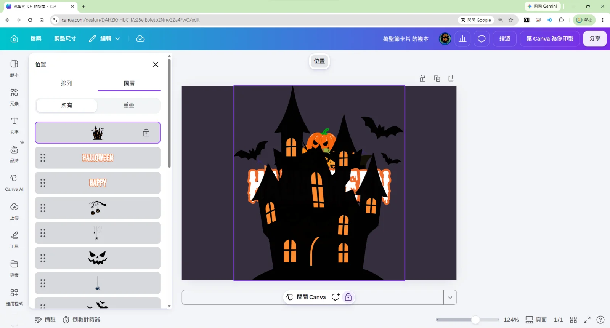
往下捲一捲，你會發現清單長得嚇人——鬼臉、蜘蛛、蝙蝠、彩旗、幽靈、一整排南瓜⋯⋯它們全都在卡片上，全都被城堡壓著。
💡 這張清單還有一個好處
清單裡的每一條都有一張小縮圖。就算那個物件在畫面上完全看不見，你還是從縮圖認得出它是什麼。等一下要找幽靈、找蜘蛛網，就是靠這些縮圖。
7點清單裡的東西，看看它躲在哪
在清單裡挑一個排在城堡下面的物件，點它一下。畫面上不會多出任何東西——但是會多出一個紫色的框：
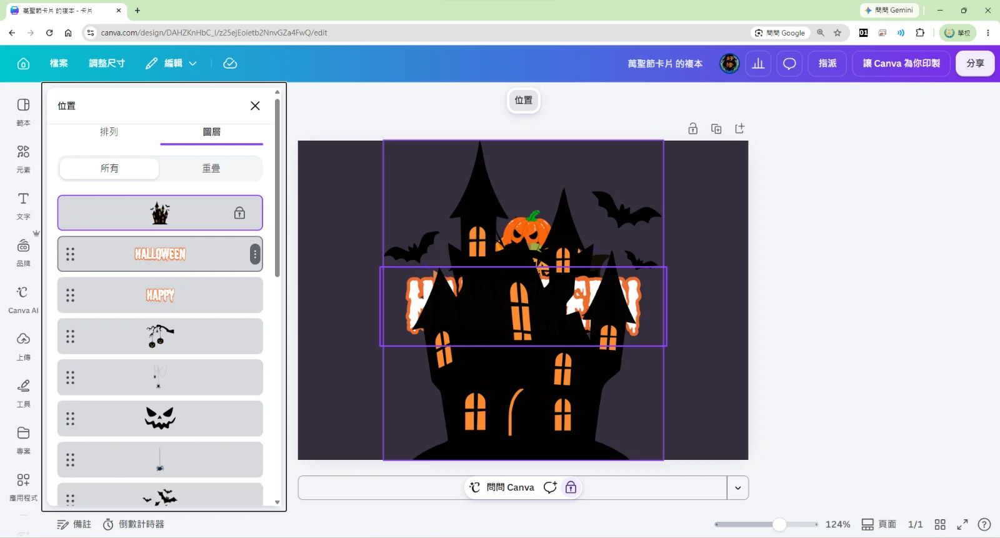
停下來想一秒：你選得到它，但你看不到它。 這就是「被擋住」最標準的樣子——物件好好地在那裡、位置也對，只是前面站了一座城堡。
那個紫色的框也在告訴你兩件事：這個東西有多大、在哪裡。等一下它跑到前面來，就會剛好出現在框的那個位置。
紫色的框出現了，框裡卻是空的。這代表什麼？
如果那個物件真的不見了，Canva 還框得出來嗎？
8往上搬：它就跑到城堡前面了
關鍵動作來了。在清單裡長按剛剛那一條，往上拖，拖到城堡那一條的上面再放手：
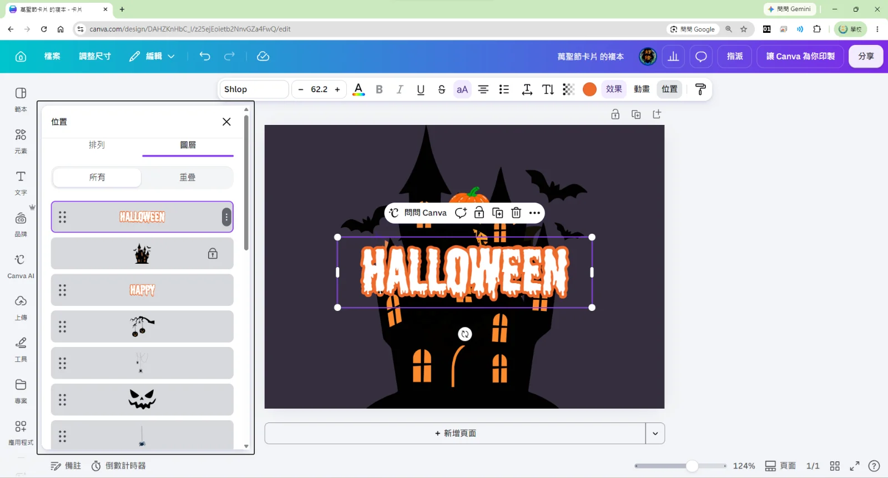
順便看一眼畫布上方：因為現在選到的是文字，浮出來的是文字編輯區——字體（Shlop）、字的大小（62.2）、字的顏色都在上面。想換顏色、換字體，現在就可以改，做法跟第 1 課一樣。
⚠️ 拖的時候抓哪裡？
- 每一條左邊有六個小點的地方，就是拖曳的把手，抓那裡最穩。
- 手要一路按著，看到那一條插到城堡上面了再放開——中途鬆手它會彈回原位。
- 拖錯了？按左上角的返回鍵（或鍵盤 Ctrl + Z）退回上一步，再拖一次就好。
9一個一個搬，整張卡片就長出來
剩下的就是同一個動作重複做：點清單裡的下一條 → 看它在畫面的哪裡 → 往上拖到城堡前面。HAPPY 接著上來，標題就完整了：
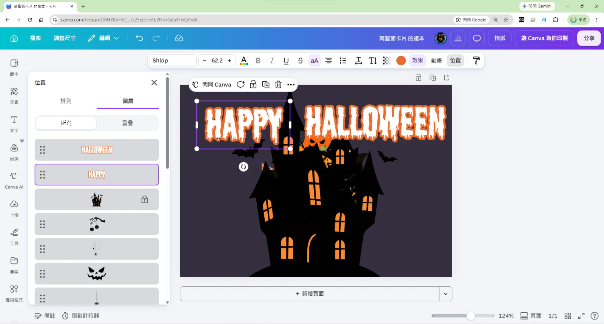
繼續搬：南瓜、幽靈、蝙蝠、蜘蛛、彩旗、TRICK OR TREAT 的牌子⋯⋯一個一個現身，整張卡片就這樣長出來了。搬到一半你會發現一件事：城堡在清單裡被越擠越下面——因為它上面那一大串，全都是被你搬到它前面的東西。
東西放好之後，直接在畫面上拖就能換位置、拉角落就能改大小——這些都跟前兩課一樣。圖層只負責「誰在誰前面」，不負責「在哪裡」，兩件事要分開想。
10故意留在後面：前面跟後面都要有
搬到這裡會有一個誘惑：乾脆全部都搬到最前面。先忍住——如果每樣東西都在最前面，整張卡片會變得又平又擠，城堡反而看不出來是主角。
好看的畫面需要前面有東西、後面也有東西。像月亮、天上的蝙蝠、遠處的樹，就該留在城堡後面，城堡才有「站在前面」的感覺：
可是麻煩來了：被擋住的東西，滑鼠根本點不到。 你想調那張蜘蛛網，但它整個躲在城堡後面，在畫面上怎麼點都點到城堡。
解法就是回到圖層清單去點它——清單裡每一條都點得到，不管它被埋得多深：
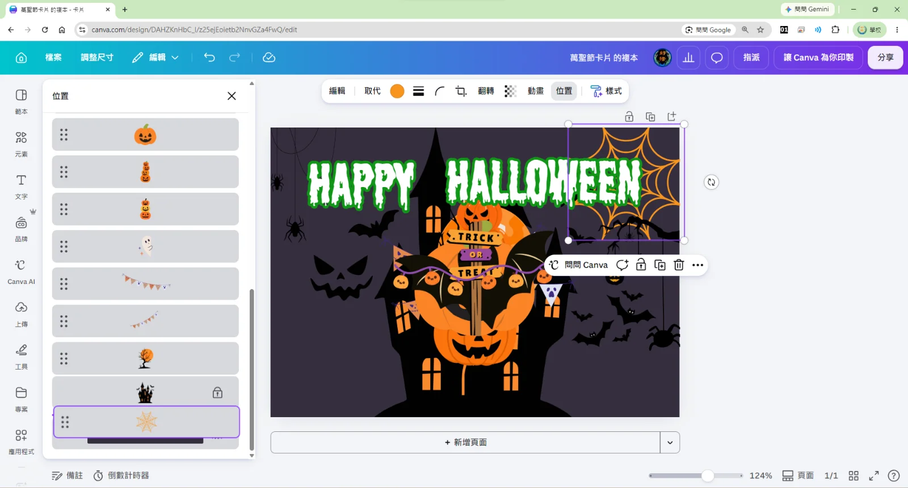
🔍 「在後面」不等於「看不到」
注意看那張蜘蛛網：它排在城堡後面，可是右上角那一塊還是看得見。因為城堡沒有蓋到那裡。
所以前後關係真正的意思是：只有被蓋到的部分才看不見。這正好可以拿來做效果——讓南瓜「半躲在城堡後面」，看起來就像站在城堡旁邊，很有層次。
11翻轉：讓它換個方向
搬完之後常常會遇到這種事：幽靈臉朝左，可是你想把它放在左邊、讓它看著卡片中間。這時候用翻轉。
選到那個物件，看畫布上方的工具列，找到翻轉按一下：
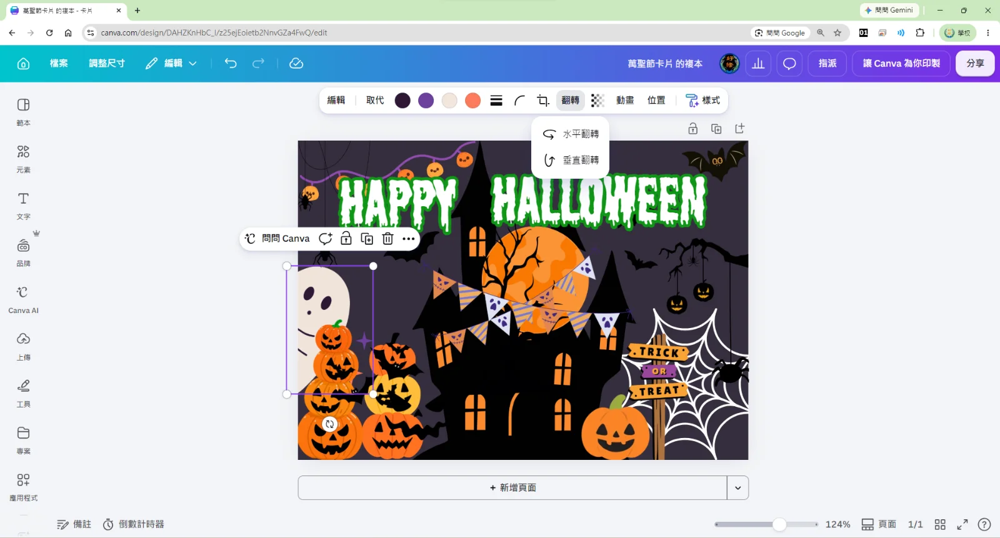
🙃 翻轉 vs 旋轉，不一樣
- 翻轉是鏡像——左右（或上下）對調，物件本身還是正的。
- 旋轉是轉角度——抓物件下面那個圓圈箭頭轉，可以歪著放。
- 想讓東西「換邊看」用翻轉；想讓東西「斜斜的」用旋轉。
12完成，然後下載
東西都搬好、位置也調順了，就是完成的樣子。回頭看一眼城堡還在原地，一步都沒動：
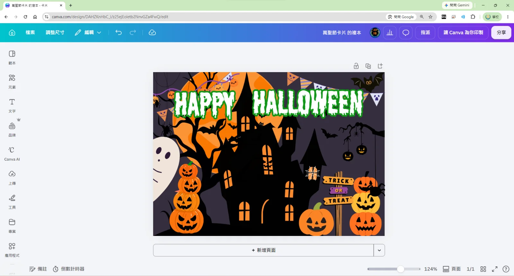
最後下載成一張圖片，做法跟前兩課一模一樣：
⬇️ 下載的兩條路
- 做法一：右上角分享 → 面板下半部左邊第一個下載
- 做法二：左上角檔案 → 選單裡的下載
兩條路都會走到同一個面板。確認檔案類型是 PNG，再按最下面紫色的下載。詳細步驟看 第 1 課「把名片下載下來」那一段。
下載出來的成品長這樣——沒有 Canva 的介面，乾乾淨淨一張卡片，印出來就是明信片的大小：
13換你做一張
照著下面的順序做一遍。做完一步就點一下打勾，才不會漏掉。
- 打開範本網址，按 檢視範本 → 在編輯器開啟，確認登入的是你自己的帳號
- 點一下城堡，找到那個鎖頭，確認它真的拖不動
- 按畫布上方的位置，切到圖層頁籤，把整張清單從頭捲到尾看一遍
- 點清單裡城堡下面的任一條，看看畫面上的紫色框出現在哪裡
- 把那一條往上拖到城堡前面，看它跳出來
- 重複上面兩步，把 HAPPY、HALLOWEEN 和你喜歡的物件都搬到前面
- 故意留兩三個在城堡後面當背景（選不到就回清單點），再挑一個用翻轉換方向
- 按 分享 → 下載（或 檔案 → 下載），檔案類型選 PNG，存起來
⚠️ 交作品之前，自己先檢查三件事
- HAPPY HALLOWEEN 完整看得到嗎？標題只要被蓋到一個角，整張卡片就不像成品。
- 有東西留在城堡後面嗎？全部都在最前面的話，畫面會又平又擠，城堡也不像主角了。
- 有沒有哪個東西疊在一起打架？兩個南瓜黏成一團就分開一點——圖層管前後，位置還是要自己調。
🎁 做完了還有時間？
- 把標題換個顏色試試看。綠色、紫色、白色，萬聖節的感覺差很多。
- 找一個物件，故意把它半藏在城堡後面——只露出一半，看起來就像躲在城堡旁邊偷看。
- 到元素裡再找一兩個萬聖節的圖案放上去。新放的東西一定在最前面，想把它塞到中間，一樣用圖層清單往下拖。
- 做完的卡片可以印出來，寫幾句話送給同學——14.8 × 10.5 公分，剛好一張明信片。